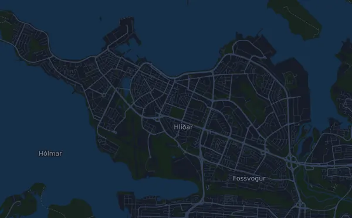

Íslandsbanki Reykjavík Marathon – 42,2 km (Marathon)
- Distanse
- 42,5 km
- Høydemeter
- ↑ 221 m
- Høyeste punkt
- 30 moh.
- Underlag
- Vei
- Karakter
- Flat
Høydeprofil
Forbered deg med Mila
Mila er en løpecoach i en app. Legger du et løp inn i planen din, planlegger coachen ukene fram til start etter formen din, og gir deg en tidsprognose og en plan for tempo, drikke og energi i løypa.

Rett økt. Rett dag.
Løypa

Om løypa
Íslandsbanki Reykjavík Marathon – 42,2 km (Marathon) er et gateløp på 42,5 km i Reykjavík, Island. Løypa har 221 høydemeter oppover og 220 nedover, 5,2 m per km, og regnes dermed som flat. Høyeste punkt ligger 30 moh. og laveste 0 moh.
Den største stigningen starter ved km 11,4: 25 høydemeter på 4,5 km med 0,6 % i snitt, opp til 30 moh. Totalt har løypa 2 stigninger på minst 25 høydemeter; den siste starter ved km 30,3.
I Mila-appen beskriver coachen løypa i detalj på ditt språk og planlegger tempo og energi for den.
Stigninger
| Starter ved | Lengde | Høydemeter | Stigning | Topp (moh.) |
|---|---|---|---|---|
| km 11,4 | 4,5 km | 25 m | 0,6 % | 30 |
| km 30,3 | 4,2 km | 25 m | 0,6 % | 29 |
Tempotabell
Íslandsbanki Reykjavík Marathon – 42,2 km (Marathon) på 3:00:00 – tid per km og mellomtider
4:14 per km · km 10: 42:24 · km 21,1: 1:29:27 · km 30: 2:07:11 · km 40: 2:49:34 · mål: 3:00:00
Íslandsbanki Reykjavík Marathon – 42,2 km (Marathon) på 3:30:00 – tid per km og mellomtider
4:57 per km · km 10: 49:27 · km 21,1: 1:44:21 · km 30: 2:28:22 · km 40: 3:17:50 · mål: 3:30:00
Íslandsbanki Reykjavík Marathon – 42,2 km (Marathon) på 4:00:00 – tid per km og mellomtider
5:39 per km · km 10: 56:31 · km 21,1: 1:59:16 · km 30: 2:49:34 · km 40: 3:46:06 · mål: 4:00:00
Íslandsbanki Reykjavík Marathon – 42,2 km (Marathon) på 4:30:00 – tid per km og mellomtider
6:22 per km · km 10: 1:03:35 · km 21,1: 2:14:10 · km 30: 3:10:46 · km 40: 4:14:21 · mål: 4:30:00
Tidene forutsetter jevnt tempo hele veien. Det er ren regning, ingen prognose: i bakker, i trengsel og ved drikkestasjoner varierer tempoet.
Vanlige spørsmål
Når går Íslandsbanki Reykjavík Marathon – 42,2 km (Marathon)?
Datoen for neste utgave er ikke klar ennå. Løpet gikk sist 22. august 2026.
Hvor langt er Íslandsbanki Reykjavík Marathon – 42,2 km (Marathon), og hvor mange høydemeter er det?
Løpet er 42,5 km langt med 221 høydemeter oppover og 220 nedover. Høyeste punkt ligger 30 moh.
Hvordan er løypa i Íslandsbanki Reykjavík Marathon – 42,2 km (Marathon)?
Løypa regnes som flat, med 5,2 høydemeter per km i snitt. Den har 2 stigninger på minst 25 høydemeter; den største starter ved km 11,4: 25 høydemeter på 4,5 km. Løypa går fra start til et mål på et annet sted. Underlaget er vei.
Hvordan legger jeg opp farten i Íslandsbanki Reykjavík Marathon – 42,2 km (Marathon)?
Sikt på en jevn innsats hele veien, og hold igjen de første kilometerne når beina føles friske og feltet drar fra. Løypa er flat, så et jevnt tempo per kilometer fungerer godt. I Mila får du en tempoplan for akkurat denne løypa etter din egen form.
Flere løp som dette
Flere løp i nærheten
- Laugavegur Ultra Marathon 52,4 km17. juli 2027 · Landmannalaugar, Island
- 101ª Corrida Internacional de São Silvestre 15 km31. desember 2026 · São Paulo, Brasil
- 20 km de Bruxelles30. mai 2027 · Bruxelles, Belgia
Forbered deg med Mila
Rett økt. Rett dag.
Opplysningene kommer fra løypefilen og arrangørens informasjon. Sjekk dato, starttider og regler hos arrangøren.
Mila er ikke tilknyttet, sponset av eller godkjent av arrangøren eller løpets sponsorer. Navn og varemerker tilhører sine eiere. Arrangør eller rettighetshaver? Be om endring eller fjerning